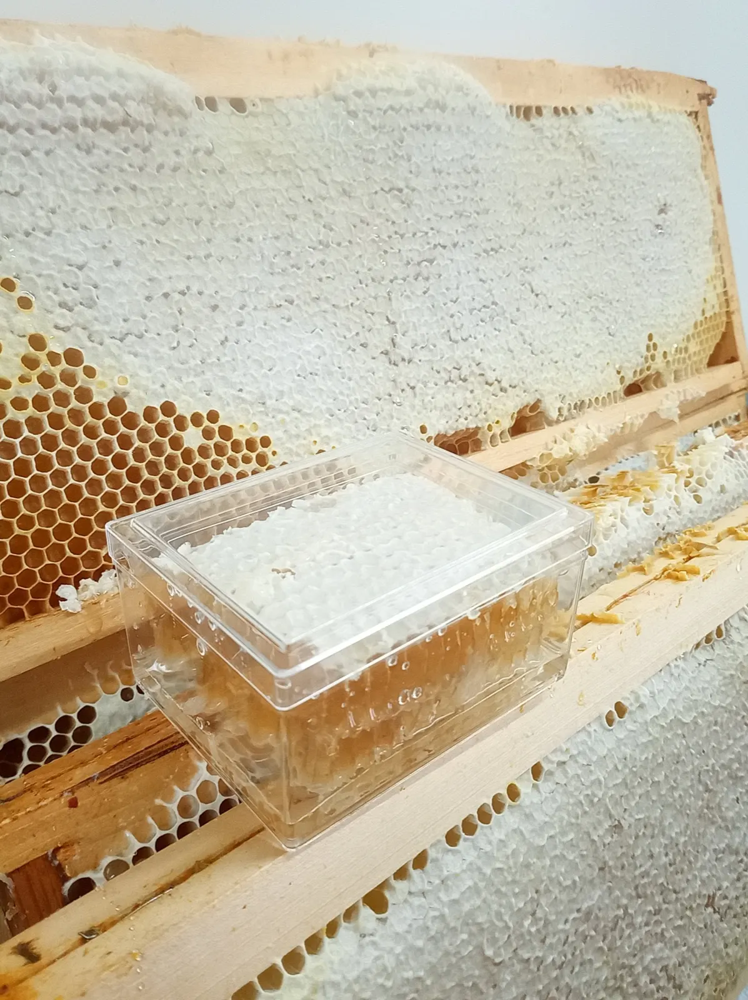
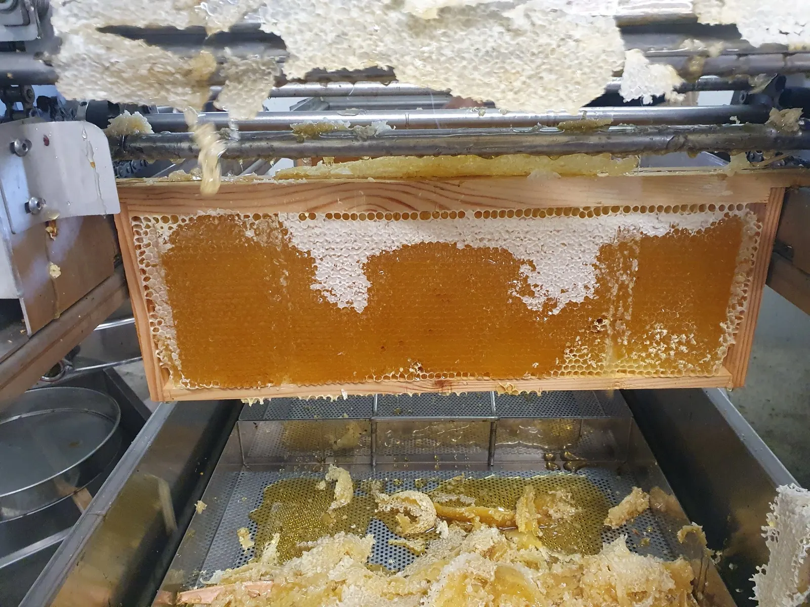
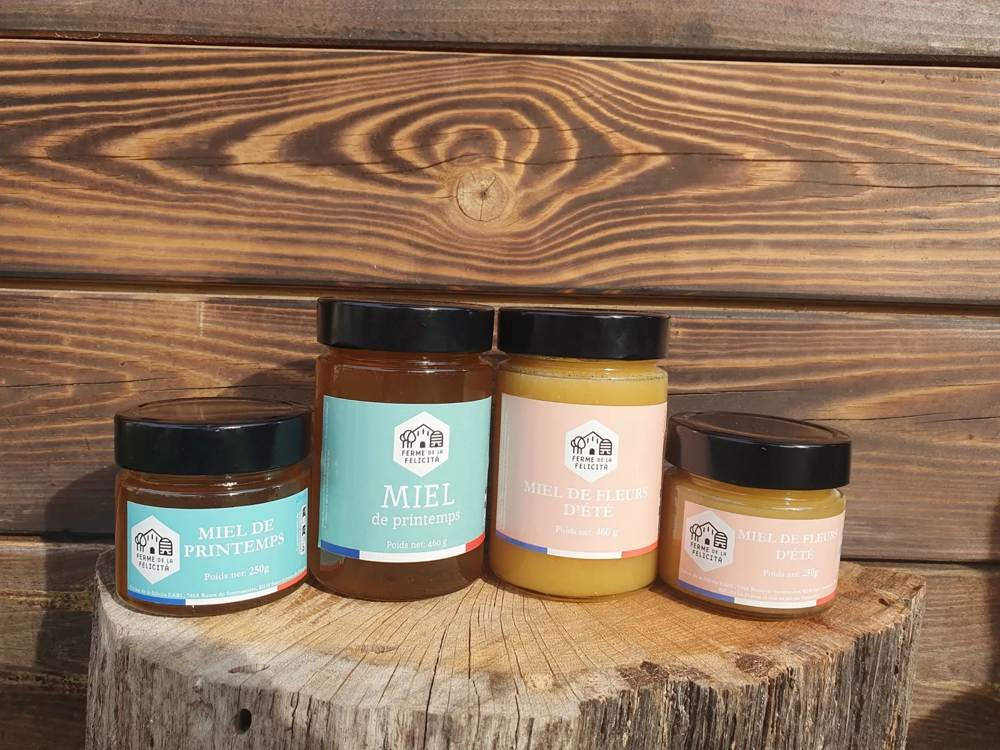
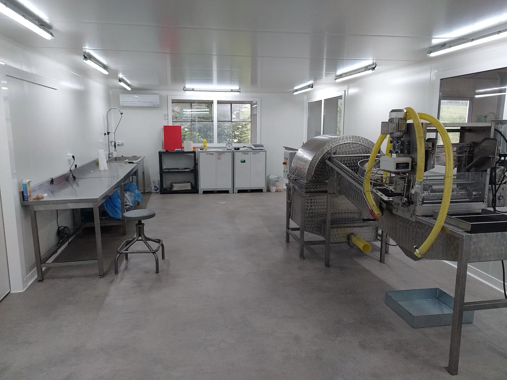
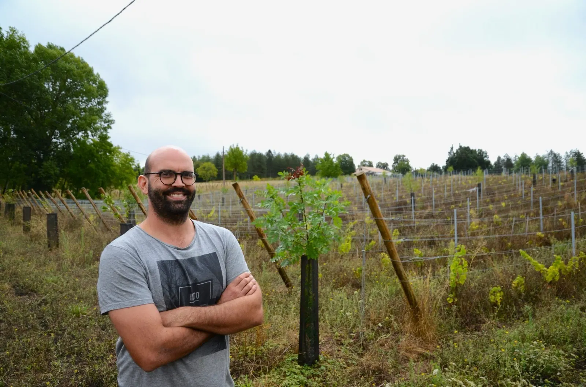
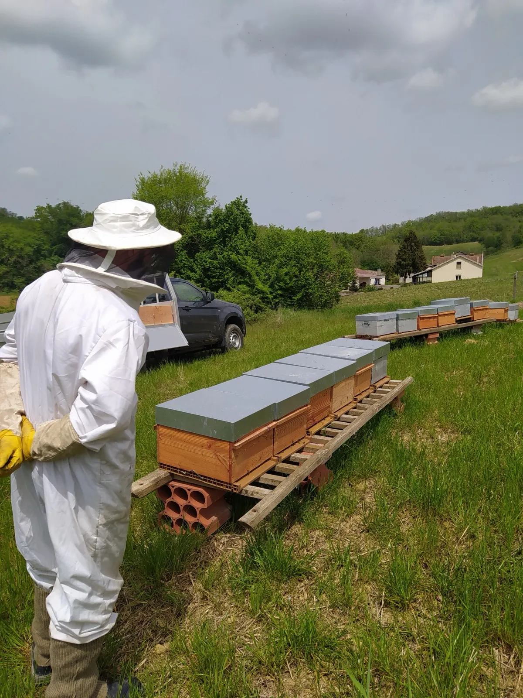
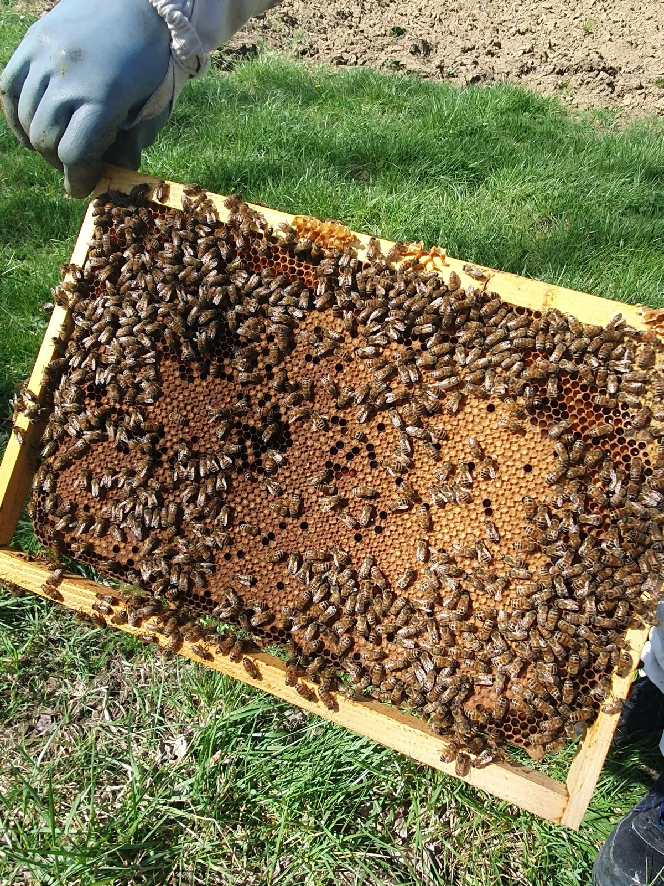
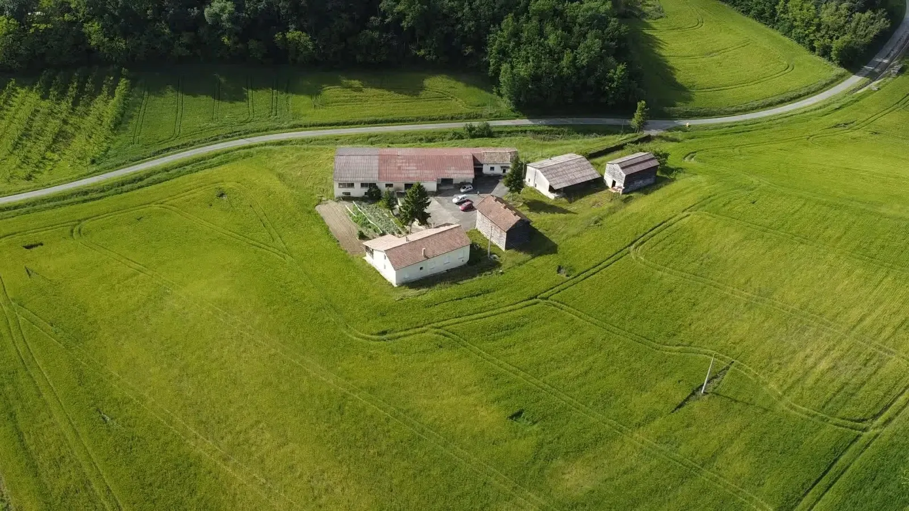
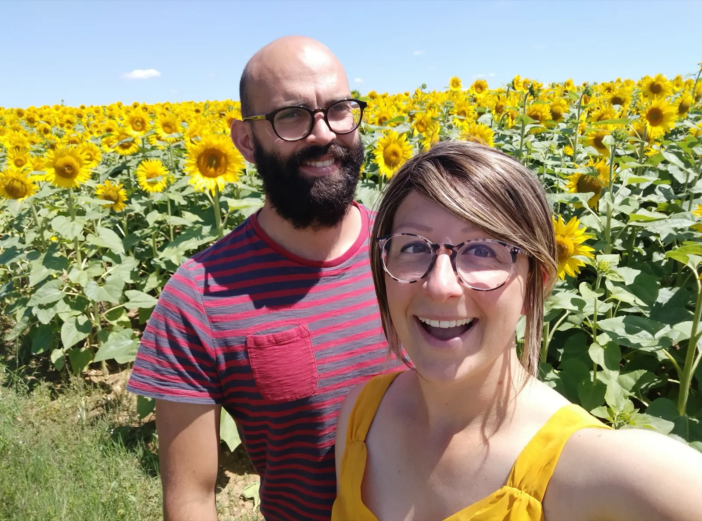

Le miel
Le miel de nos ruches, récolté, extrait et mis en pot à la ferme.
- Miel de printemps
- Miel de fleurs d'été
- Miel de châtaignier
- Miel d'acacia
- Miel de lavande
- Miel en rayon
Une exploitation familiale portée par Thibault et Elena : le miel de nos 200 colonies d'abeilles, transformé à la ferme en nougat et en pain d'épices, et les fruits de nos 4 hectares de vergers.


Nous extrayons, mettons en pot et transformons notre miel nous-mêmes, dans le laboratoire de la ferme.

Le miel de nos ruches, récolté, extrait et mis en pot à la ferme.
Préparé dans notre laboratoire, à partir de notre miel.
« Si comme moi vous l'aimez mou et fondant, dense en noisettes, alors c'est le kiff assuré. »Magdalena L., avis Google
Lui aussi transformé dans notre laboratoire à partir de notre miel, comme le gâteau au miel.
Et aussi : propolis et cire d'abeilles, pâte à tartiner au miel, hydromel, raisins et jus de raisin.
Où trouver nos produits
Ça y est ! Nous avons terminé la construction et l'aménagement de notre nouvel outil de production, à la ferme.
Avec ses 50 m², nous avons de la place pour organiser nos productions proprement. Il nous sert à :
Un projet financé principalement par nos capitaux propres, avec le soutien de l'Union européenne et de la région Occitanie.
Dans le Tarn-et-Garonne, entre Montauban, Agen et Cahors, Thibault est apiculteur et viticulteur. Il s'inspire des savoirs des anciens comme des techniques agricoles modernes : agroforesterie, agriculture biologique, agroécologie.
Nous profitons des spécificités de notre terroir : la texture et la composition du sol, la flore locale, la topographie et le climat qui le caractérisent.



Une visite de la ferme, puis une dégustation de nos produits : une belle occasion de rencontrer un apiculteur et de passer un bon moment dans le Bas-Quercy et le Pays-de-Serre.
La visite d'un rucher et l'ouverture de ruches pour découvrir le fonctionnement d'une colonie d'abeilles. Combinaison et gants fournis.
Tous les jours sauf le samedi matin.
Nos produits sont aussi en boutique à Montauban, Montcuq, Agen, Toulouse, Bordeaux, Montpezat-de-Quercy et Montalzat : les adresses.
« Thibault a pris le temps de nous faire visiter son exploitation et de nous partager ses connaissances, ses projets… »
Laurie C., avis Google

Un grand gîte pouvant accueillir jusqu'à 9 personnes : 5 chambres avec chacune sa salle de bain, un grand salon-cuisine et une véranda.
À vélo ou à pied, vous pouvez camper dans les champs de l'exploitation. Eau mise à disposition gratuitement, vous êtes autonomes pour l'intendance. Camping-cars et vans aménagés sur réservation uniquement.
Le frelon fait des ravages chez les apiculteurs et les producteurs de fruits, et c'est aussi un voisin encombrant pour les habitants proches d'un nid. Nous détruisons les nids chez les particuliers et les professionnels, rapidement et en toute sécurité.
Nous ne détruisons pas les essaims d'abeilles : nous les collectons et les déplaçons ailleurs.
